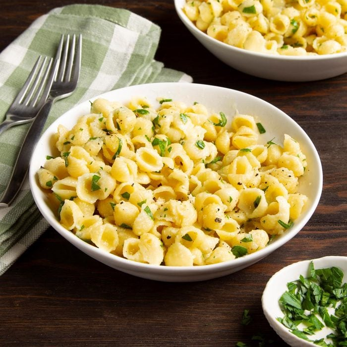

Garlic Butter Pasta Recipe

Description
The butter garlic pasta goes well with any entree. It's great served
hot or served cold with fresh herbs.
Ingredients
- 2 cups uncooked small pasta shells
- 3 to 4 garlic cloves
- 1/2 cup butter
- 1/4 cup grated Parmesan cheese
- 2 tablespoons minced fresh parsley
- 1/4 teaspoon salt
- 1/8 teaspoon pepper
Steps
- Cook the pasta shells until soft.
- Meanwhile, in a large saucepan, cook garlic
in butter over medium-low heat until mixture is fragrant, remove from heat.
- Drain pasta; add to garlic butter.
- Stir in the Parmesan cheese, salt and pepper;
toss to coat.
- Serve and garnish with herbs.